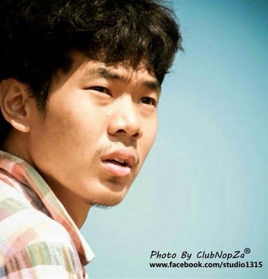
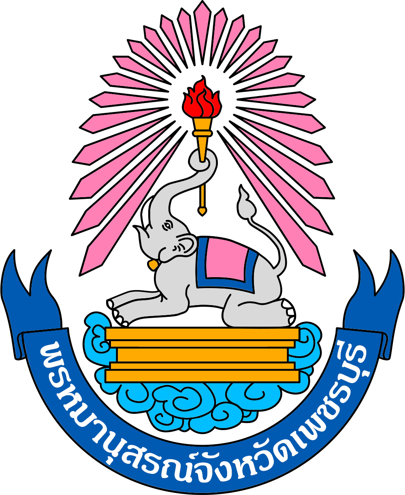

|  | M.Eng (Biomedical Engineering) |
Department of Biomedical Engineering, Faculty of Engineering, Mahidol University, Nakhon Pathom, THAILAND[Jun 2019]
|
Department of Biomedical Engineering, Faculty of Engineering, Mahidol University, Nakhon Pathom, THAILAND[May 2015]
|
|  | Prommanusorn Phetchaburi School, Phetchaburi, THAILAND[Mar 2011]
|
PDMS/CNT electrodes with bioamplifier for practical in-the-ear and conventional biosignal recordings
Jongsook Sanguantrakul, Apit Hemakom, Tharapong Soonrach and Pasin Israsena
Journal of Neural Engineering, 2024
The knee kinematic patterns and associated factors in healthy Thai adults
Tanyaporn Patathong, Krongkaew Klaewkasikum, Chanika Angsnuntsukh, Thira Woratanarat, Chusak Kijkunasathian, Jongsook Sanguantrakul, Patarawan Woratanarat
BMC Musculoskeletal Disorders, 2023
The ankle kinematic reference of normal gait pattern in Thai adults
Krongkaew Klaewkasikum, Tanyaporn Patathong, Chanika Angsanuntsukh, Thira Woratanarat, Jongsook Sanguantrakul, Patarawan Woratanarat
Frontiers in Surgery, 2022
The Development of Low-Cost Dry Electrode using PDMS/CNT Composite
Jongsook Sanguantrakul, Apit Hemakom, Pasin Israsena
2023 Third International Symposium on Instrumentation, Control, Artificial Intelligence, and Robotics (ICA-SYMP)
The Development of Intelligent Models for Stress Detection towards Real-world Applications
Apit Hemakom, Danita Atiwiwat, Jongsook Sanguantrakul, Pasin Israsena
2022 19th International Joint Conference on Computer Science and Software Engineering (JCSSE)
Development of BCI System for Walking Substitution via Humanoid Robot
Jongsook Sanguantrakul, Nattawat Soontreekulpong, Thanawin Trakoolwilaiwan, Yodchanan Wongsawat
2020 8th International Electrical Engineering Congress (iEECON)
Analysis of Walking Movement Using EEG for the Lower-Limb Paralysis
Jongsook Sanguantrakul, Nattawat Soontreekulpong, Thanawin Trakoolwilaiwan, Yodchanan Wongsawat
2019 12th Biomedical Engineering International Conference (BMEiCON)
Analysis of body movement using EEG for the limb activity of paralysis patients
Jongsook Sanguantrakul, Nattawat Soontreekulpong, Thanawin Trakoolwilaiwan, Yodchanan Wongsawat
The 10th International Brain Research Organization (IBRO) World Congress of Neuroscience
Comparison Between Integrated Circuit and Transistor Pulse Generators for Functional Electrical Stimulation
Jongsook Sanguantrakul and Yodchanan Wongsawat
2018 International Electrical Engineering Congress (iEECON)
Development of BCI System for Functional Substitution: Controlling FES
Jongsook Sanguantrakul, Nattawat Soontreekulpong, Thanawin Trakoolwilaiwan, Yodchanan Wongsawat
i-CREATe '17: Proceedings of the 11th International Convention on Rehabilitation Engineering and Assistive Technology
Analysis of body movement using EEG for the limb activity of paralysis patients
Jongsook Sanguantrakul, Nattawat Soontreekulpong, Thanawin Trakoolwilaiwan, Yodchanan Wongsawat
Poster presented at the 10th International Brain Research Organization World Congress of Neuroscience (IBRO), Deagu, South Korea, September 2019
Development of BCI System for Functional Substitution: Controlling Robot
Jongsook Sanguantrakul, Nattawat Soontreekulpong, Thanawin Trakoolwilaiwan, Yodchanan Wongsawat
Poster presented at the 11th International Convention on Rehabilitation Engineering and Assistive Technology (i-CREATe), Kobe, Japan, July 2017